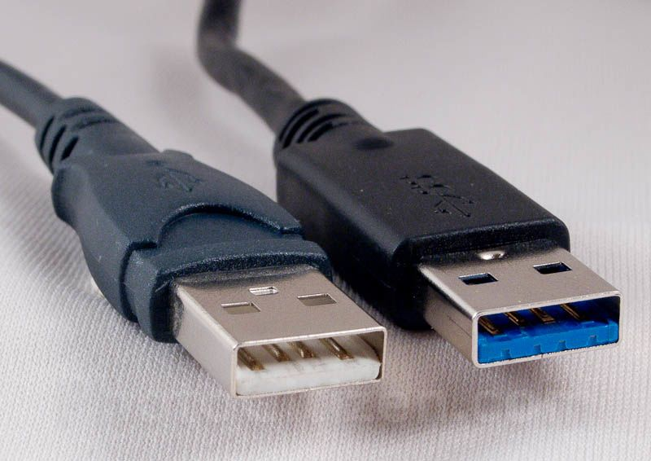

Memorijska Hijerarhija
Konkretnije, maleni konektori, strujni krugovi, protokoli za komunikaciju, konekciju i izravan kontak s PC-om. Da, ili više poznati USB. Mali uređaji na koji spremamo svoje važne podatke. Veoma praktični, velikih kapaciteta, a od nedavno i ultra brzi sa novim sučeljem. Prvo je USB bio dizajniran da spaja periferiju računala, kao miševe i tipkovnice i možda slušalice, iako to nije poželjno.
Sve je počelo 1996. Godine, kada je objavljen USB 1.0 sa brzinom od 1,5Mb/s. Nije bio praktičan i malenih brzina i nije doživio veliki uspjeh. 1998. Godine ga je zamijenio USB 1.1 sa brzinom od 12Mb/s i od tada je krenulo worldwide korištenje. USB 2.0 predstavljen je 2000. Godine sa maximalnim brzinama od 480Mb/s. USB 3.0 sa brzinom od oko 400MB/s nam je stigao 2008. Godine, a njegov stariji brat USB 3.1 na samom početku 2013. Godine (1250MB/s). Danas nam je najnoviji USB type C ili USB 3.2 Gen 2x2.
